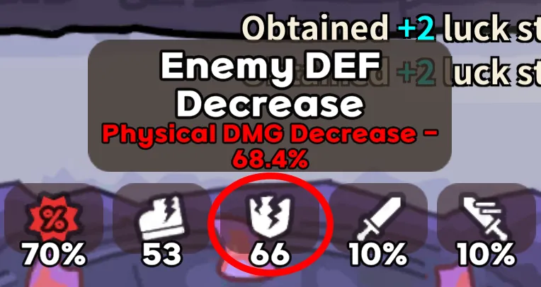
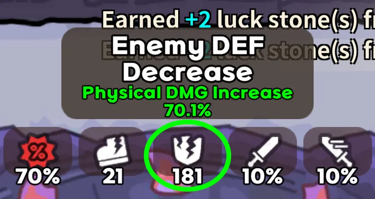

The Enemy's Defense Stat
Note: I will refer to Defense Reduction as DR later in the guide
In Lucky Defense enemies have a defense stat. Early on, enemies have a low defense stat. As the waves get higher and higher, the enemies that appear have higher and higher defense. If they have a high defense, you do less damage. They can ignore around 80% of the damage you deal to them if they have high defense. But if they have a really low defense stat, you actually get bonus damage. You can get so much bonus damage that you nearly double the damage they take.
Which Attacks Does Defense Block?
The defense stat of the enemies only protects them from physical damage. The most common physical DPS are
- Bat Man
- Rocket Chu
- Tar
- Vayne
- Blob
- Bomba
- Verdee
- Immortal Frog
Any of the damage these characters deal will be affected by the enemy defense stat.
Some characters do magic damage and are not impacted by the defense stat. The most common magic DPS are
- King Dian
- Dragon
- Lancelot
- Iron Meow
- Lazy Taoist
- Hailey
None of the damage these characters deal will be affected by an enemies defense stat.
How To See Enemy Defense Stats
You can actually see exactly how your damage is getting effected by the enemy defense stat by clicking on this icon I've circled in red.

The effect here is "Physical DMG Decrease - 68.4%"
This is a huge loss of damage. This means that if you have 2 Bat Man, you'll do less damage than if you had only 1 Bat Man with good defense reduction.
Alternatively, here's an example of doing extra damage using defense reduction

How Can I Reduce Enemy Defense?
To actually reduce the enemy defense is much easier than trying to get a second Bat Man, Rocket Chu, or any DPS Mythic. Lots of non-Mythic units in the game give DR just for existing. These are the units most commonly used for DR
- Hunter - 10 DR (15 DR at level 12)
- Monopoly Man - 20 DR (This is a lot)
- Electro Robot - 5 DR (This is a lot less, but you need stuns anyway)
- Demon - 5 DR (7.5 at level 12)
These are just the ones I've used most often to get more DR. There are other units in the game that give DR. I recommend getting familiar with all the units, and reading through all their skills. The non-Mythic units are a very important part of winning runs in this game and are an important piece in learning to win runs regularly and easily.
Summary
This may seem like a lot if you've just started playing Lucky Defense. However, knowing this stuff will give you an edge that most beginners don't have. Not only that, but defense reduction is one of the most important mechanics to understand before you can start clearing Hard regularly. Once you know it well, you could even try to carry people through their first Hard mode clears, even if you have low artifact levels (sb/mg 1). I recommend getting Kitty Mage 12 though, as that will make beating Hard much easier.
Good luck!